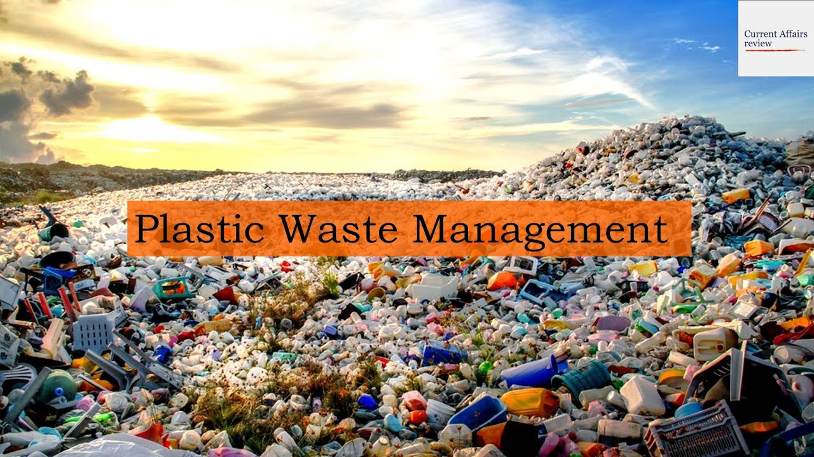
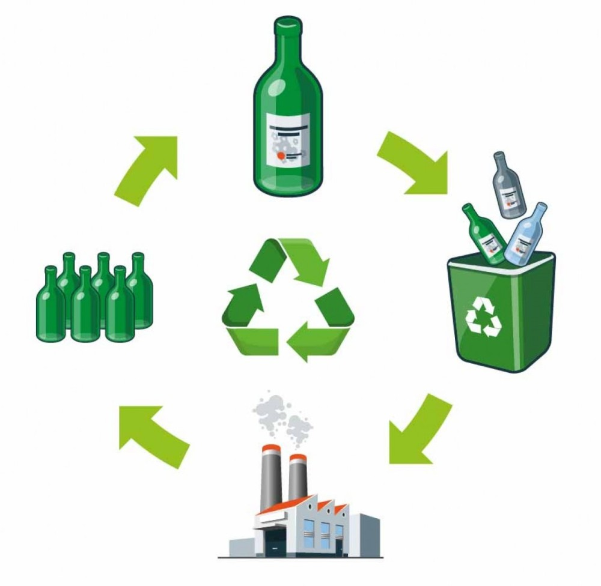
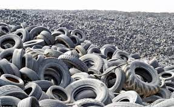

DIGI-Waste Manager
Waste Management Information :

1.Plastic Waste

Plastic recycling is the reprocessing of plastic waste into new and useful products. When performed correctly, this can reduce dependence on landfill, conserve resources and protect the environment from plastic pollution and greenhouse gas emissions.[1][2][3][4] Although recycling rates are increasing, they lag behind those of other recoverable materials, such as aluminium, glass and paper. The global recycling rate in 2015 was 19.5%, while 25.5% was incinerated and the remaining 55% disposed of to landfill.[5] Since the beginning of plastic production in the 20th century, until 2015, the world has produced some 6.3 billion tonnes of plastic waste, only 9% of which has been recycled, and only ~1% has been recycled more than once.[5
Click here to Read More....
2.Glass Waste

Glass recycling is the processing of waste glass into usable products. Glass that is crushed and ready to be remelted is called cullet.[1] There are two types of cullet: internal and external. Internal cullet is composed of defective products detected and rejected by a quality control process during the industrial process of glass manufacturing, transition phases of product changes (such as thickness and colour changes) and production offcuts. External cullet is waste glass that has been collected or reprocessed with the purpose of recycling. External cullet (which can be pre- or post-consumer) is classified as waste. The word "cullet", when used in the context of end-of-waste, will always refer to external cullet.
Click here to Read More....
3.Metal Waste

Scrap metal originates both in business and residential environments. Typically a "scrapper" will advertise their services to conveniently remove scrap metal for people who don't need it.
Scrap is often taken to a wrecking yard (also known as a scrapyard, junkyard, or breaker's yard), where it is processed for later melting into new products. A wrecking yard, depending on its location, may allow customers to browse their lot and purchase items before they are sent to the smelters, although many scrap yards that deal in large quantities of scrap usually do not, often selling entire units such as engines or machinery by weight with no regard to their functional status. Customers are typically required to supply all of their own tools and labor to extract parts, and some scrapyards may first require waiving liability for personal injury before entering. Many scrapyards also sell bulk metals (stainless steel, etc.) by weight, often at prices substantially below the retail purchasing costs of similar pieces.
Click here to Read More....
4.Electronic Waste

E-waste or electronic waste is created when an electronic product is discarded after the end of its useful life. The rapid expansion of technology and the consumption driven society results in the creation of a very large amount of e-waste.
The European Waste Electrical and Electronic Equipment Directive Directive classifies waste in ten categories: Large household appliances (including cooling and freezing appliances), Small household appliances, IT equipment (including monitors), Consumer electronics (including TVs), Lamps and Luminaires, Toys, Tools, Medical devices, Monitoring and control instruments and Automatic dispensers. These include used electronics which are destined for reuse, resale, salvage, recycling, or disposal as well as re-usables (working and repairable electronics) and secondary raw materials (copper, steel, plastic, etc.). The term "waste" is reserved for residue or material which is dumped by the buyer rather than recycled, including residue from reuse and recycling operations, because loads of surplus electronics are frequently commingled (good, recyclable, and non-recyclable). Several public policy advocates apply the term "e-waste" and "e-scrap" broadly to all surplus electronics. Cathode ray tubes (CRTs) are considered one of the hardest types to recycle.[2]
Click here to Read More....
5.Paper Waste

The recycling of paper is the process by which waste paper is turned into new paper products. It has a number of important benefits: It saves waste paper from occupying homes of people and producing methane as it breaks down. Because paper fibre contains carbon (originally absorbed by the tree from which it was produced), recycling keeps the carbon locked up for longer and out of the atmosphere. Around two-thirds of all paper products in the US are now recovered and recycled, although it does not all become new paper. After repeated processing the fibres become too short for the production of new paper - this is why virgin fibre (from sustainably farmed trees) is frequently added to the pulp recipe.[1]
Click here to Read More....
6.Rubber Waste

Tire recycling, or rubber recycling, is the process of recycling waste tires that are no longer suitable for use on vehicles due to wear or irreparable damage. These tires are a challenging source of waste, due to the large volume produced, the durability of the tires, and the components in the tire that are ecologically problematic.[1]
Because tires are highly durable and non-biodegradable, they can consume valued space in landfills.[1] If waste tires are improperly managed they may cause rubber pollution. In 1990, it was estimated that over 1 billion scrap tires were in stockpiles in the United States. As of 2015, only 67 million tires remain in stockpiles.[2] From 1994 to 2010, the European Union increased the amount of tires recycled from 25% of annual discards to nearly 95%, with roughly half of the end-of-life tires used for energy, mostly in cement manufacturing.[3][4]
Click here to Read More....